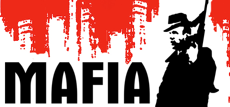

A Franchise
A Mafia sorozat 3 részt élt meg eddig, TPS nézetű, nyílt világú, lövöldözős játékok amelyeknek történetük tele van fordulatokkal.
 Mafia: The City of Lost Heaven
Ez az első része a sorozatnak, melyet a cseh Illusion Softworks fejlesztett és a Gathering of Developers adott ki 2002. Augusztus 27-én.
A történet az 1930-as években játszódik, Lost Heaven város egyik hétköznapi taxisát, Tommy Angelot irányíthatjuk, aki véletlenül belekeveredik Don Salieri bűnszervezetébe,
miután egy szokásos estén a szervezet két tagja, Paulie és Sam éppen menekült néhány gengszer elől, és mivel Tommy épp a helyszínen volt,
Paulie és Sam fegyvert fogtak a fejéhez, és Tommynak kellett megszöktetnie őket az üldöző gengszterek elől. Ezután a Don meginvitálja
Tommyt, hogy legyen a sofőrjük. Szépen lassan már gyilkolnunk is kell, megvesztegetni embereket, szépen lassan közeledve Tommy morális
határaihoz.
 Mafia II
Mafia II
A folytatás 2010. Augusztus 24-én érkezett, a 2K Czech fejlesztette (régebben Illusion Softworks) és a 2K Games adta ki. Ezúttal az
1940-es és 1950-es években járunk, Empire Bay városában. A főszereplő, Vito Scaletta egy szegény család második gyerekeként született
1925-ben Szicíliában, majd családjával elköltöztek Amerikába, Empire Bay városába. Összebarátkozik egy Joe Barbaro nevű emberrel, aki
bűnözésbe rántja Vitot. Egyik lopásuk alkalmával Vitot elkapják a rendőrök, majd börtön helyett inkább a hadseregbe vonul. A szicíliai Huskey hadműveletben vesz részt, ahol a felszabadulást segíti.
Nem sokkal később lövést kap, majd visszatér Amerikába. Találkozik Joe-val, akiből időközben Maffiózó lett. Szerez hamis papírokat, és elintézi
Vitonak, hogy soha többé ne kelljen a seregbe visszamennie. Vito családjának tartozásai vannak uzsorásoknak, amiket néhai apjának köszönhetnek.
Tisztességes munkával nem sikerül neki a pénzt megszereznie, így Joe-t követve belőle is Maffiózó válik.
Mafia III